A.1 · Shooting the pictures
I shot everything on an iPhone main camera (26 mm equivalent), handheld, turning the phone in place between shots. Neighboring shots overlap by roughly 20 to 50 percent. Here are the three sets I used for mosaics.
Sather Gate
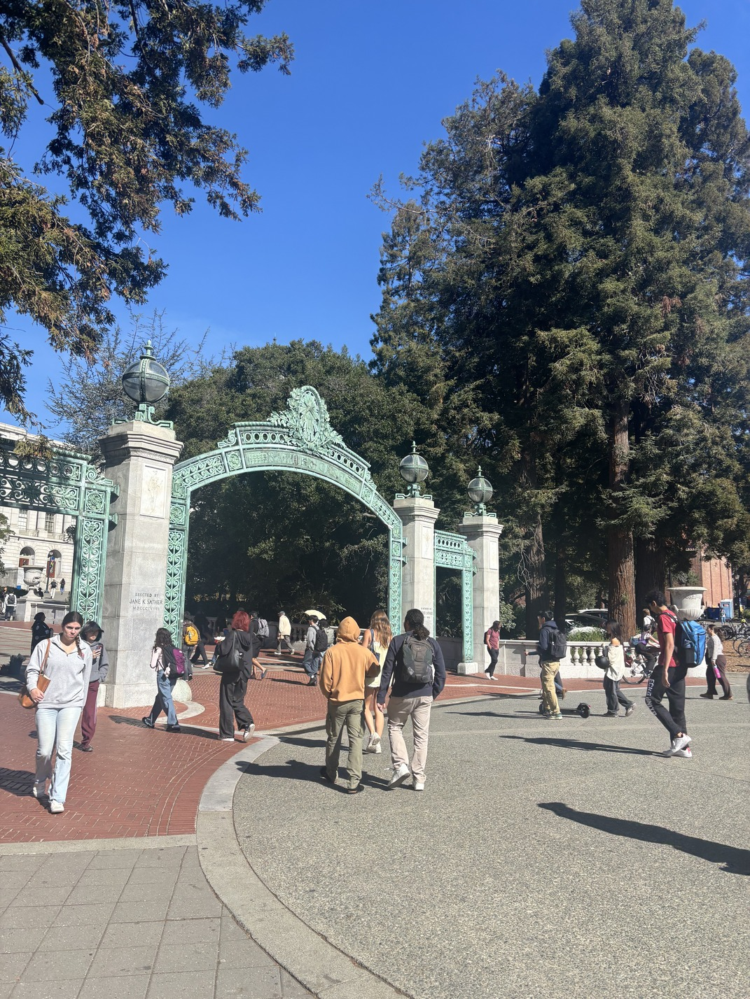
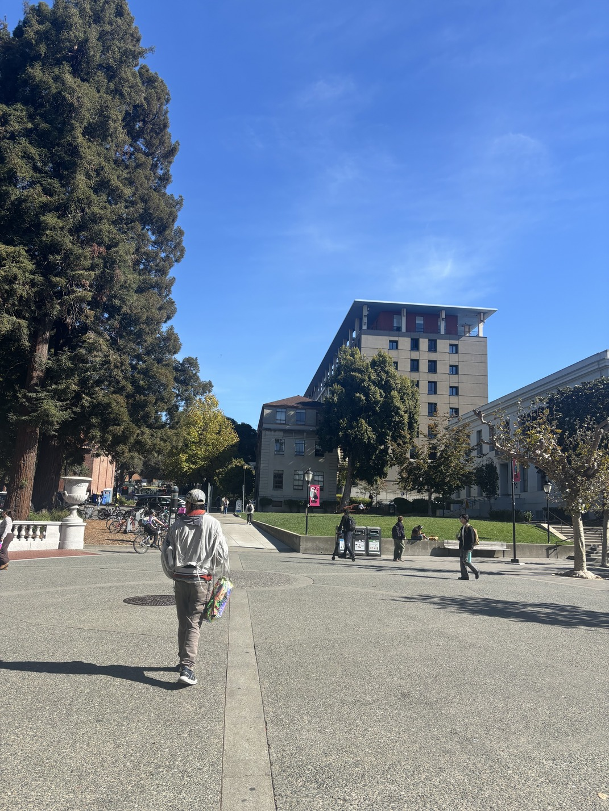
Wheeler Hall and the Campanile
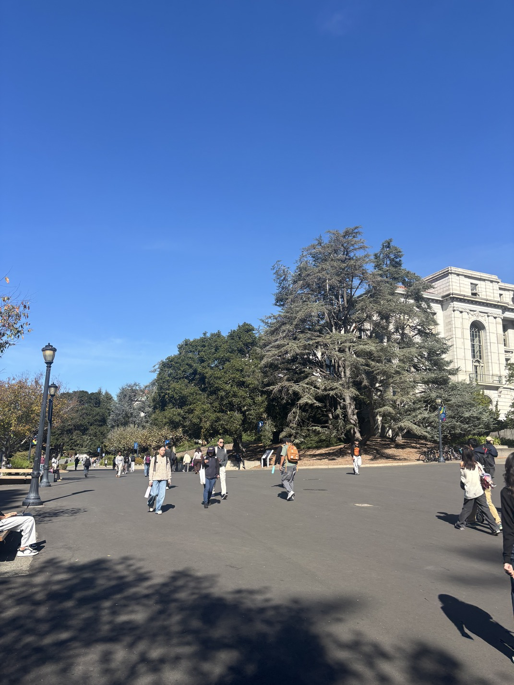
Lamp posts by Doe
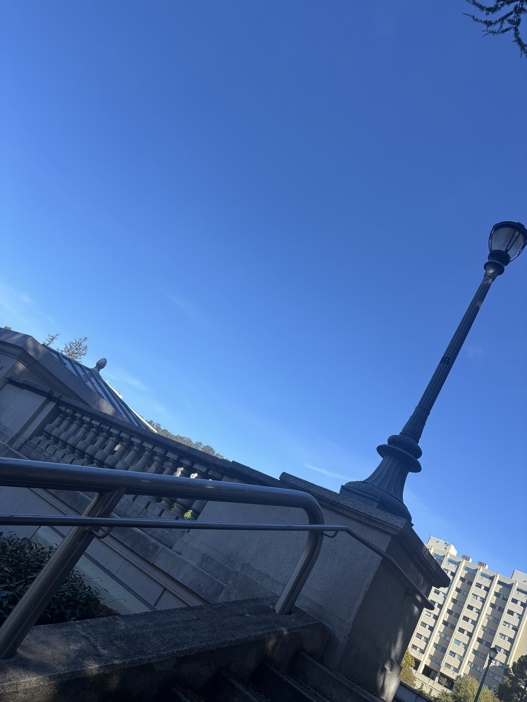
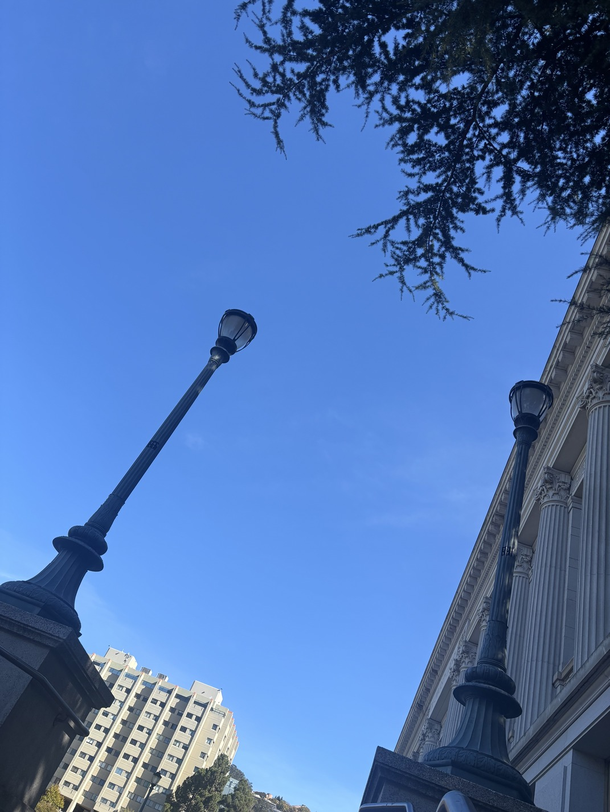
The lamp set started as three photos, shot at a diagonal angle on purpose. The first one (IMG_4056) shares only a thin band of the building with the next shot, and the railing in front sits about a meter from the camera. Small hand movements shift that railing much more than the building behind it, so no single homography fits both. The fit from that thin band blew up the warp, so I left that photo out and kept the two that share the lamp and the tower.
A.2 · Recovering homographies
A homography maps a point (x, y) in one image to (u, v) in another:
u = (h1 x + h2 y + h3) / (h7 x + h8 y + 1)
v = (h4 x + h5 y + h6) / (h7 x + h8 y + 1)Multiplying out the denominator makes each equation linear in the eight unknowns. So each point pair gives two rows of a system Ah = b:
[ x y 1 0 0 0 -u·x -u·y ] h = u
[ 0 0 0 x y 1 -v·x -v·y ] h = vWith more than four pairs the system is overdetermined, and I solve it with least squares. h9 is fixed to 1.
def system(im1_pts, im2_pts):
rows, rhs = [], []
for (x, y), (u, v) in zip(im1_pts, im2_pts):
rows.append([x, y, 1, 0, 0, 0, -u * x, -u * y])
rows.append([0, 0, 0, x, y, 1, -v * x, -v * y])
rhs += [u, v]
return np.array(rows, float), np.array(rhs, float)
def computeH(im1_pts, im2_pts):
A, b = system(im1_pts, im2_pts)
h = np.linalg.lstsq(A, b, rcond=None)[0]
return np.append(h, 1).reshape(3, 3)
def apply_h(H, pts):
pts = np.asarray(pts, float)
p = np.c_[pts, np.ones(len(pts))] @ H.T
return p[:, :2] / p[:, 2:]Picking the points
I picked every point by hand. For each pair I looked at zoomed crops of the overlap with a coordinate grid drawn on, chose features that don't move and are easy to find in both images (corners of buildings and signs, the lamp heads, the spire, the urns), and wrote down where each one sits in both photos. Then a small refinement snaps the second image's point to the exact pixel. It warps the first image by the current H, compares a 25×25 patch around the feature with normalized cross-correlation in a small window, refits H, and repeats. Points on people were never used, since people walked between shots. pick_points.py also has a matplotlib ginput mode for clicking points directly.
def ncc(a, b):
a = a - a.mean()
b = b - b.mean()
return (a * b).sum() / (np.sqrt((a * a).sum() * (b * b).sum()) + 1e-9)
def snap(im1, im2, p, guess, half=12, search=30):
g1, g2 = im1.mean(2), im2.mean(2)
x, y = p
patch = g1[y - half:y + half + 1, x - half:x + half + 1]
best, where = -2, guess
for dy in range(-search, search + 1):
for dx in range(-search, search + 1):
u, v = guess[0] + dx, guess[1] + dy
window = g2[v - half:v + half + 1, u - half:u + half + 1]
if window.shape == patch.shape:
score = ncc(patch, window)
if score > best:
best, where = score, [u, v]
return where, bestCorrespondences and recovered matrices
Each mosaic warps the outer images into the middle (reference) image.
IMG_4048 → IMG_4049
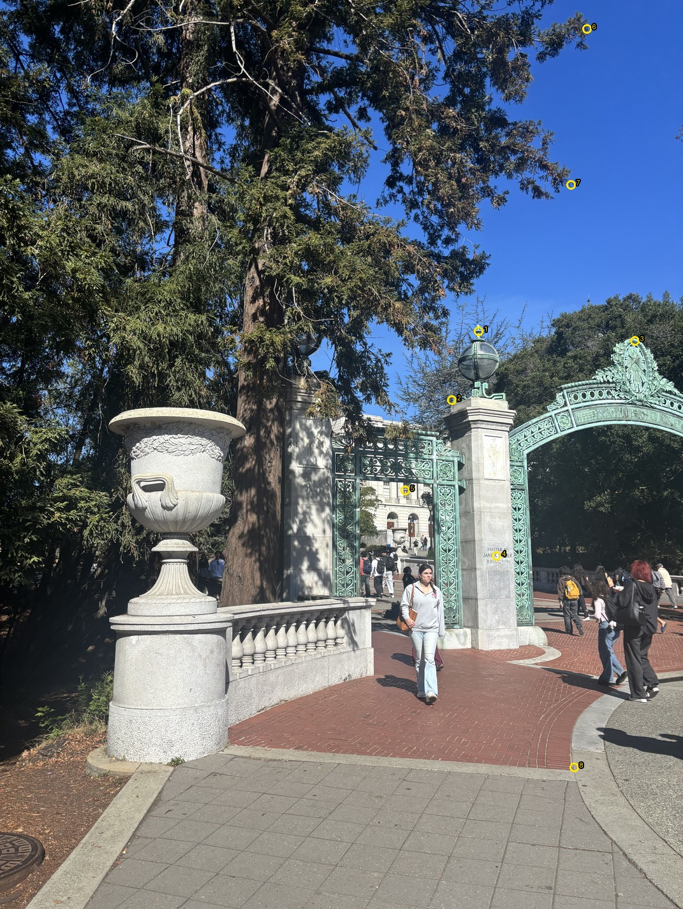
Recovered H, mapping IMG_4048 into IMG_4049. Mean leftover error 4.08 px, largest 6.47 px.
1.3232 -0.13448 -655.16
0.38766 1.2567 -313.63
0.000355 -1.4e-05 1IMG_4050 → IMG_4049
Recovered H, mapping IMG_4050 into IMG_4049. Mean leftover error 2.21 px, largest 3.95 px.
2.0235 -0.062199 814.94
0.68341 1.0052 -48.267
0.000892 -7.6e-05 1IMG_4051 → IMG_4052
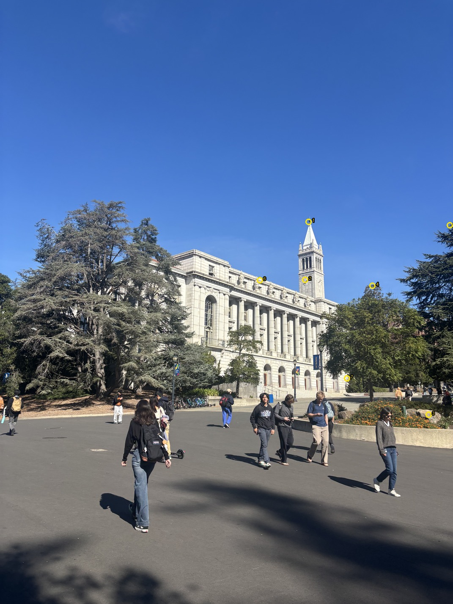
Recovered H, mapping IMG_4051 into IMG_4052. Mean leftover error 0.49 px, largest 1.06 px.
1.6515 -0.14798 -742.31
0.58874 1.4254 -417.77
0.000631 -3.4e-05 1IMG_4053 → IMG_4052
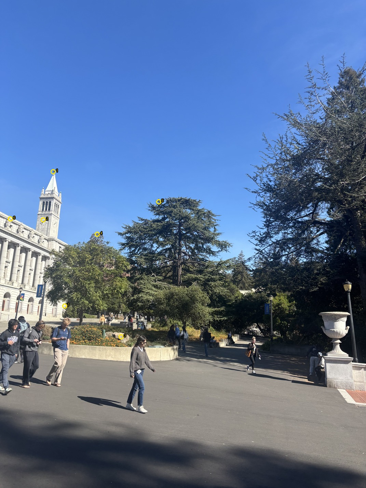
Recovered H, mapping IMG_4053 into IMG_4052. Mean leftover error 7.15 px, largest 11.2 px.
0.69327 -0.034882 545.39
-0.28094 0.67738 159.41
-0.0002 -0.000188 1IMG_4058 → IMG_4057
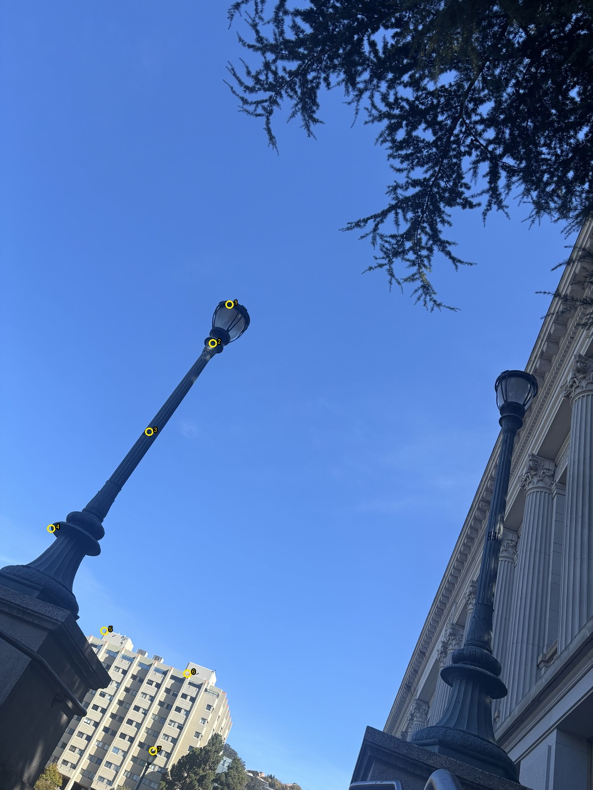
Recovered H, mapping IMG_4058 into IMG_4057. Mean leftover error 4.02 px, largest 6.82 px.
0.58331 -0.005633 628.7
-0.30704 0.78005 87.752
-0.000235 -0.000101 1The leftover error is a few pixels, not a fraction of one, because I held the phone by hand. The lens moved a little between shots, so nearby things (the urns, the planter, the lamp) shift by a different amount than faraway things (the trees, the Campanile). The least-squares fit splits the difference.
The system for IMG_4058 → IMG_4057
The full system Ah = b for the lamp pair, 7 points and 14 equations. Coordinates are in pixels of the quarter-size images.
[ 414 550 1 0 0 0 -423522 -562650 ] [ 1023 ]
[ 0 0 0 414 550 1 -189198 -251350 ] [ 457 ]
[ 384 620 1 0 0 0 -384384 -620620 ] [ 1001 ]
[ 0 0 0 384 620 1 -207744 -335420 ] [ 541 ]
[ 269 780 1 0 0 0 -246135 -713700 ] [ 915 ]
[ 0 0 0 269 780 1 -190990 -553800 ] [ 710 ]
[ 92 955 1 0 0 0 -70472 -731530 ] [ 766 ]
[ 0 0 0 92 955 1 -84272 -874780 ] [ 916 ]
[ 188 1140 1 0 0 0 -163748 -992940 ] [ 871 ]
[ 0 0 0 188 1140 1 -205108 -1243740 ] [ 1091 ]
[ 338 1217 1 0 0 0 -346788 -1248642 ] [ 1026 ]
[ 0 0 0 338 1217 1 -396812 -1428758 ] [ 1174 ]
[ 276 1357 1 0 0 0 -270756 -1331217 ] [ 981 ]
[ 0 0 0 276 1357 1 -366804 -1803453 ] [ 1329 ]A.3 · Warping and rectification
Both warps use inverse warping. I push the four image corners through H to get the output bounding box. Then, for every output pixel, H-1 gives the spot in the source image to sample from. Pixel centers sit at integer coordinates. Output pixels that land outside the source get alpha 0, and that alpha later serves as the mask for blending.
def bounds(images, Hs):
pts = np.vstack([apply_h(H, corners(im.shape)) for im, H in zip(images, Hs)])
x0, y0 = np.floor(pts.min(0)).astype(int)
x1, y1 = np.ceil(pts.max(0)).astype(int)
return x0, y0, x1 - x0 + 1, y1 - y0 + 1
def target_grid(H, shape, box=None):
if box is None:
box = bounds([np.zeros(shape)], [H])
x0, y0, w, h = box
xs, ys = np.meshgrid(np.arange(w) + x0, np.arange(h) + y0)
src = apply_h(np.linalg.inv(H), np.c_[xs.ravel(), ys.ravel()])
return src[:, 0].reshape(h, w), src[:, 1].reshape(h, w), box
def inside(im, sx, sy):
h, w = im.shape[:2]
return (sx >= -0.5) & (sx <= w - 0.5) & (sy >= -0.5) & (sy <= h - 0.5)
def sample_nn(im, sx, sy):
h, w = im.shape[:2]
xi = np.clip(np.round(sx).astype(int), 0, w - 1)
yi = np.clip(np.round(sy).astype(int), 0, h - 1)
return im[yi, xi]
def sample_bilinear(im, sx, sy):
h, w = im.shape[:2]
sx = np.clip(sx, 0, w - 1)
sy = np.clip(sy, 0, h - 1)
x0 = np.minimum(np.floor(sx).astype(int), w - 2)
y0 = np.minimum(np.floor(sy).astype(int), h - 2)
a = (sx - x0)[..., None]
b = (sy - y0)[..., None]
top = im[y0, x0] * (1 - a) + im[y0, x0 + 1] * a
bottom = im[y0 + 1, x0] * (1 - a) + im[y0 + 1, x0 + 1] * a
return top * (1 - b) + bottom * b
def warp(im, H, sampler, box=None):
sx, sy, box = target_grid(H, im.shape, box)
alpha = inside(im, sx, sy).astype(float)
out = sampler(im, sx, sy) * alpha[..., None]
return out, alpha, box
def warpImageNearestNeighbor(im, H, box=None):
return warp(im, H, sample_nn, box)
def warpImageBilinear(im, H, box=None):
return warp(im, H, sample_bilinear, box)For rectification there is only one image, so the target points come from what I know about the object. I picked the four corners of something rectangular and sent them to an upright rectangle with the object's proportions.
Recycling bin poster
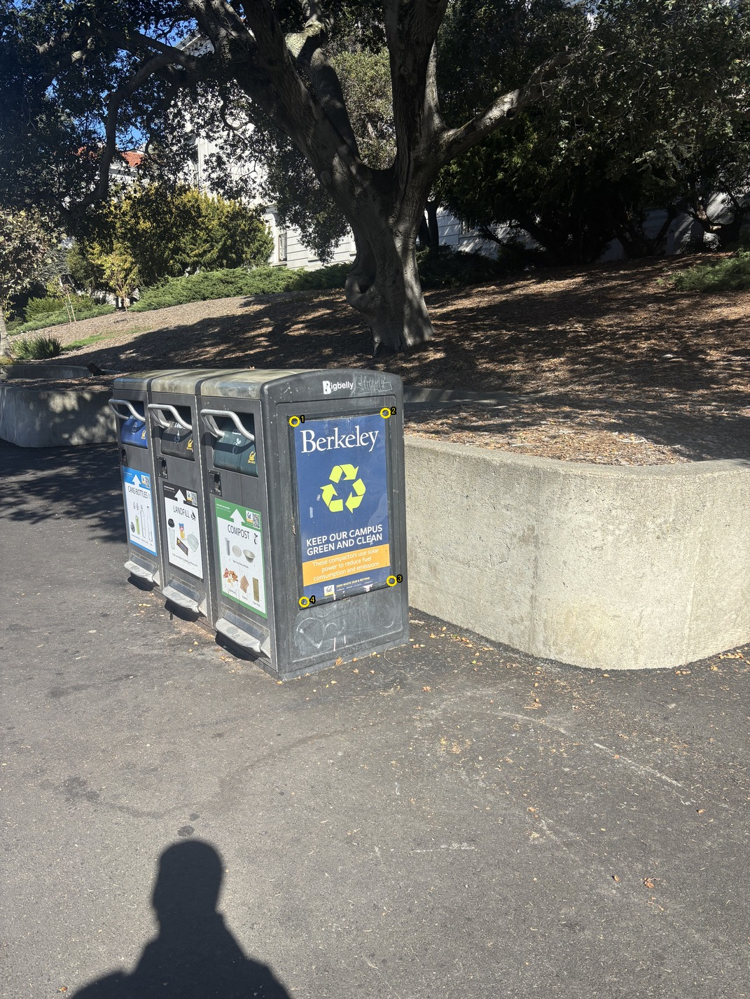
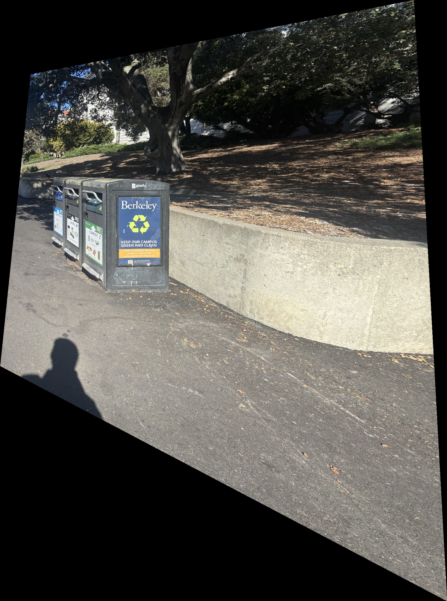
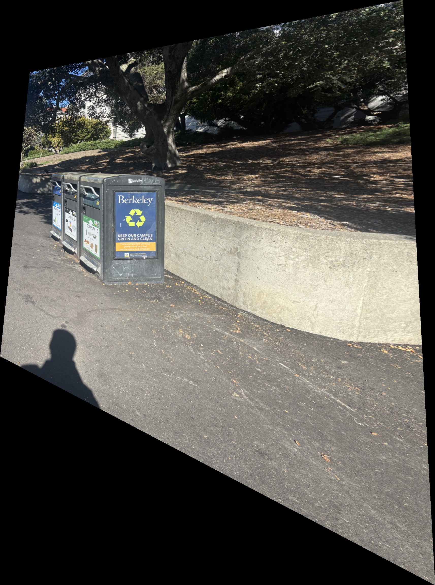
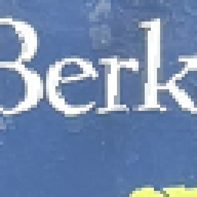
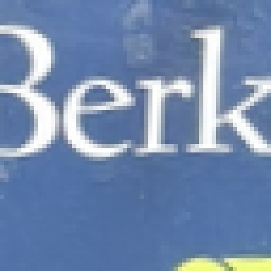
0.6875 -0.078832 81.853
-0.19281 0.69025 119.39
-0.000442 -7.5e-05 1The recycling logo comes out round and the text lines come out level, so the poster is now seen straight on.
Room 190J sign
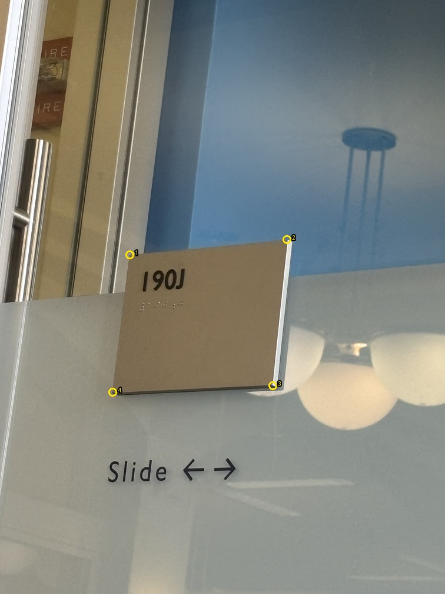
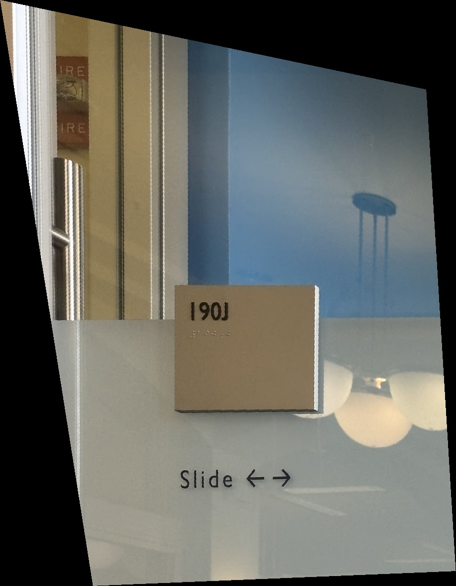
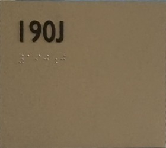
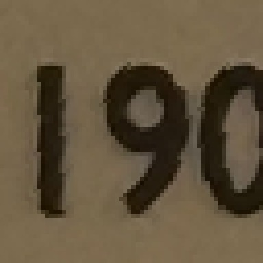
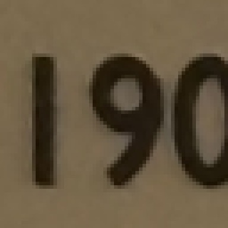
1.3357 0.18887 -159.36
0.24152 1.3217 -164.76
0.000293 0.000155 1I shot this one at an angle with the 5× lens (121 mm equivalent). After the warp, the sign is a rectangle and the "Slide" text under it is level as well, since it lies on the same glass plane.
Nearest neighbor against bilinear
| Image | Output pixels | Nearest neighbor | Bilinear |
|---|---|---|---|
| Poster | 3,943,326 | 0.194 s | 0.43 s |
| Sign | 1,076,300 | 0.044 s | 0.111 s |
Nearest neighbor copies one source pixel per output pixel. It is about two to three times faster here, but slanted edges turn into stair steps. You can see this on the letters of "Berkeley" and on the 9 and 0. Bilinear reads four pixels and mixes them by distance. It costs a few more array operations per pixel, and the edges come out smooth. Both are fully vectorized with NumPy, so even bilinear takes well under a second at this size. Bilinear softens the image slightly where the warp stretches it, but I used it for every mosaic because stair steps show up much more than the slight blur.
A.4 · Blending into a mosaic
The procedure for each mosaic:
- Keep the middle photo fixed and compute H from each other photo into it.
- Push every image's corners through its H to find the bounding box of the whole mosaic.
- Warp every image into that box with bilinear inverse warping. Each warp also returns its alpha mask.
- Give each image a weight map: the distance from each pixel to the edge of its own mask. The weight is highest in the middle of each photo and falls to 0 at its border.
- Blend in two bands. The low frequencies (Gaussian blur, σ = 4) are averaged with the weights, so exposure differences fade across the whole overlap. The high frequencies come only from the image with the largest weight at each pixel, so fine detail stays sharp instead of doubling.
def warp_all(images, Hs):
box = bounds(images, Hs)
warped = [warpImageBilinear(im, H, box)[:2] for im, H in zip(images, Hs)]
return [w for w, _ in warped], [a for _, a in warped], box
def feather_weights(alphas):
return [distance_transform_edt(a > 0.5) for a in alphas]
def feather(warped, weights):
total = sum(weights) + 1e-9
return sum(w * (k / total)[..., None] for w, k in zip(warped, weights))
def two_band(warped, alphas, weights, sigma=4):
total = sum(weights) + 1e-9
best = np.argmax(np.stack(weights), 0)
low = np.zeros_like(warped[0])
high = np.zeros_like(warped[0])
for i, (w, a, k) in enumerate(zip(warped, alphas, weights)):
smooth = blur(w, sigma) / np.maximum(gaussian_filter(a, sigma), 1e-6)[..., None]
low += smooth * (k / total)[..., None]
high += np.where((best == i)[..., None], w - smooth, 0)
covered = (sum(alphas) > 0.5)[..., None]
return np.clip(low + high, 0, 1) * coveredWhy two bands
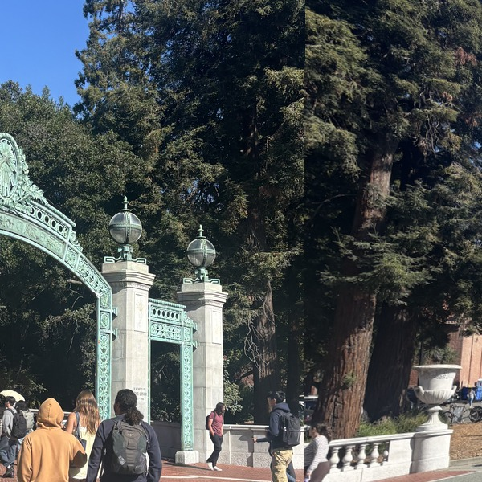
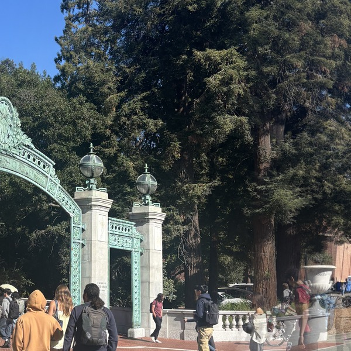
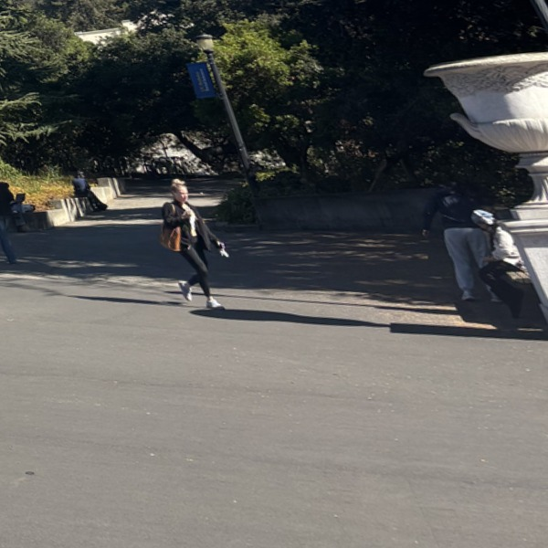


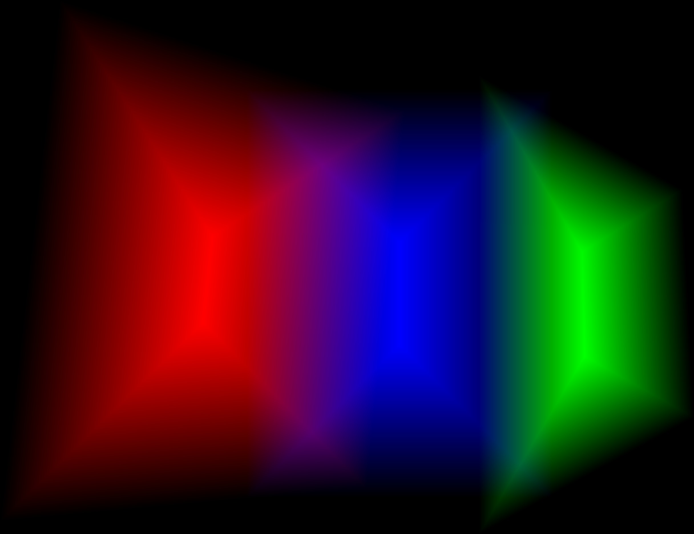
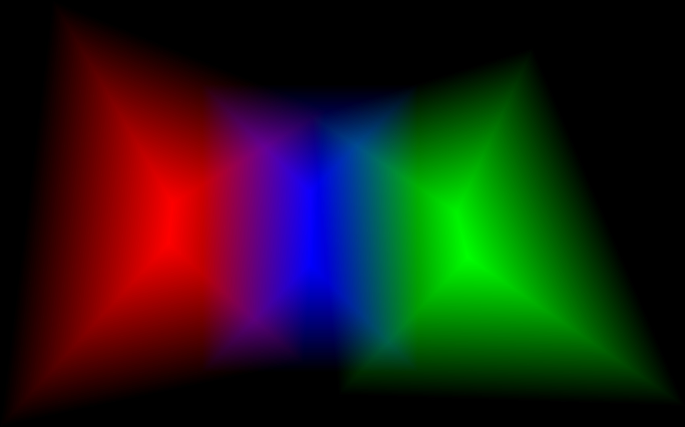
Plain overwriting leaves a visible line wherever the exposure changed between shots. A weighted average hides the line, but anything that doesn't line up exactly (people who walked, branches in the wind, the parallax above) shows up twice, faintly. Two bands keep the smooth tone of the average and pick the detail from one image. Some ghosting is still visible where a person walked across the seam itself.
Results
Sather Gate
Three photos warped into the middle one.
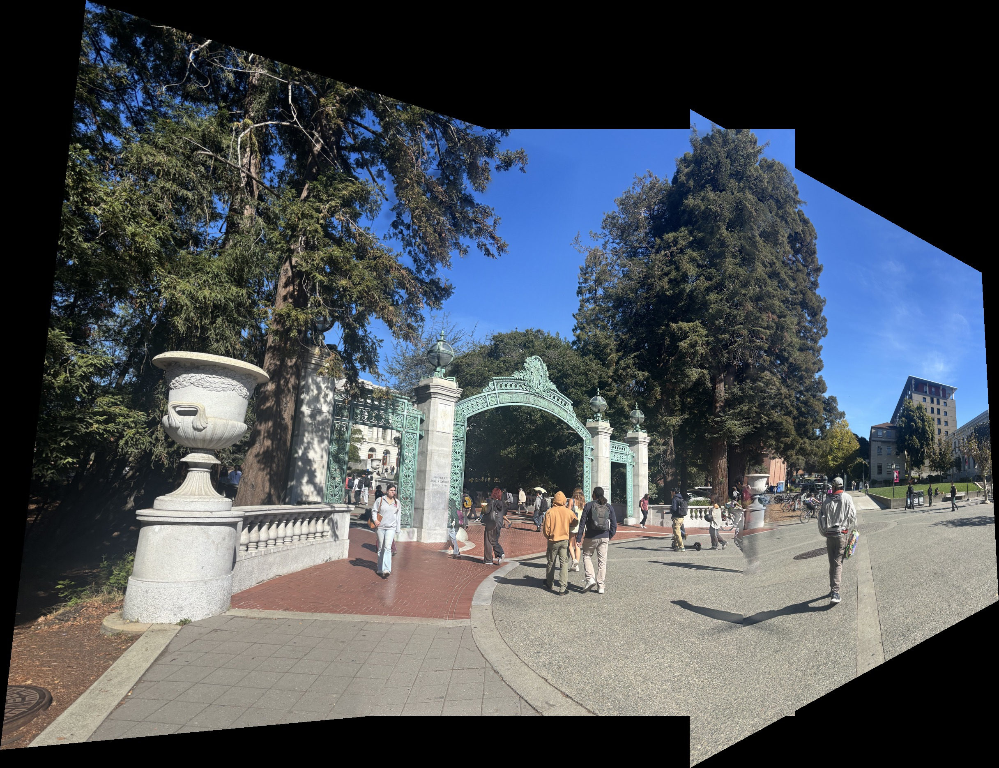
Wheeler Hall and the Campanile
Three photos covering about 115 degrees. The edges stretch a lot on a flat plane, which is what A.5 fixes.
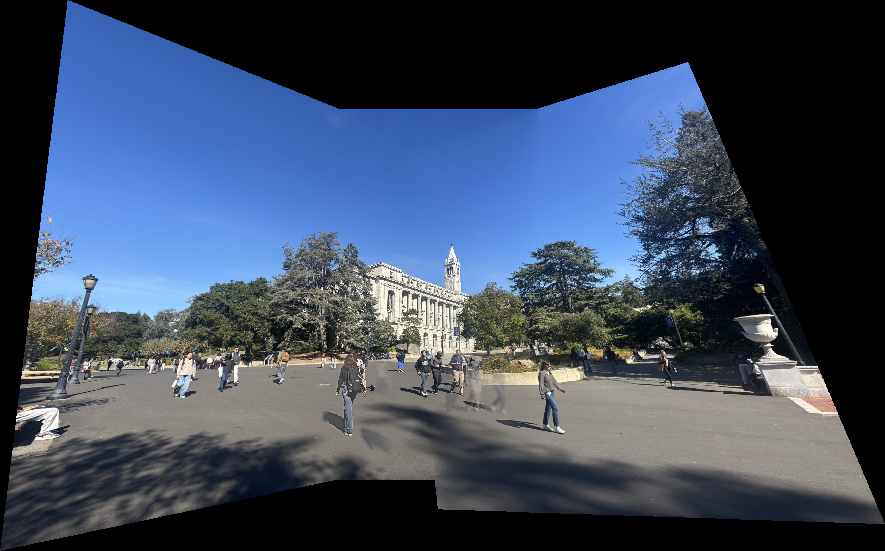
Lamp posts by Doe
Two photos shot at a diagonal angle, warped into the first one.
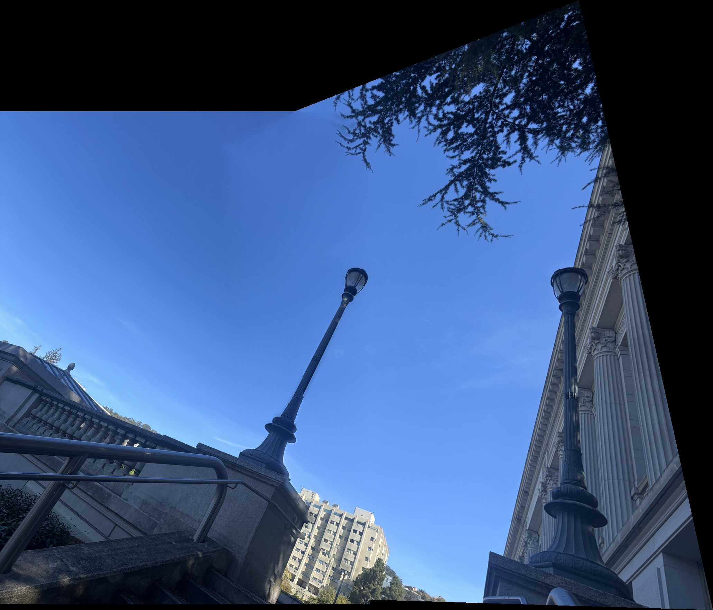
A.5 · Bells and whistles: cylindrical mosaics
A flat mosaic stretches without bound as the view widens. Instead, I project onto a cylinder around the camera. The focal length comes from the photo metadata: 26 mm equivalent on a 43.3 mm full-frame diagonal, which is 1072.7 px for the quarter-size images. That also sets the cylinder radius.
The sampling is fully inverse. Each output pixel (θ, h) on the cylinder is a ray, which hits the reference image plane at x = f tan θ + cx, y = h / cos θ + cy. That point goes through H-1 into each original photo, which is then sampled with bilinear interpolation. So every pixel is read straight from the original photos, never from an already-warped mosaic. Blending is the same two-band blend as above.
def cylinder(images, Hs, f, center, weights_from=None):
cx, cy = center
planes = [np.linalg.inv(H) for H in Hs]
xs = []
for im, H in zip(images, Hs):
h, w = im.shape[:2]
edge = np.array([[0, 0], [w - 1, 0], [w - 1, h - 1], [0, h - 1], [0, h / 2], [w - 1, h / 2]], float)
p = np.c_[edge, np.ones(len(edge))] @ H.T
xs.append(p[:, 0] / p[:, 2])
xs = np.concatenate(xs) - cx
t0, t1 = np.arctan(xs.min() / f), np.arctan(xs.max() / f)
width = int((t1 - t0) * f)
theta = t0 + np.arange(width) / f
heights = []
for im, H in zip(images, Hs):
h, w = im.shape[:2]
for y in (0, h - 1):
row = np.c_[np.arange(w), np.full(w, y), np.ones(w)] @ H.T
px, py = row[:, 0] / row[:, 2] - cx, row[:, 1] / row[:, 2] - cy
heights.append(py * np.cos(np.arctan(px / f)))
heights = np.concatenate(heights)
v = np.arange(int(heights.min()), int(heights.max()) + 1)
T, V = np.meshgrid(theta, v)
plane = np.stack([f * np.tan(T) + cx, V / np.cos(T) + cy, np.ones_like(T)], -1)
warped, alphas = [], []
for im, inv in zip(images, planes):
p = plane @ inv.T
sx, sy = p[..., 0] / p[..., 2], p[..., 1] / p[..., 2]
h, w = im.shape[:2]
a = ((sx >= -0.5) & (sx <= w - 0.5) & (sy >= -0.5) & (sy <= h - 0.5)).astype(float)
warped.append(sample_bilinear(im, sx, sy) * a[..., None])
alphas.append(a)
return warped, alphas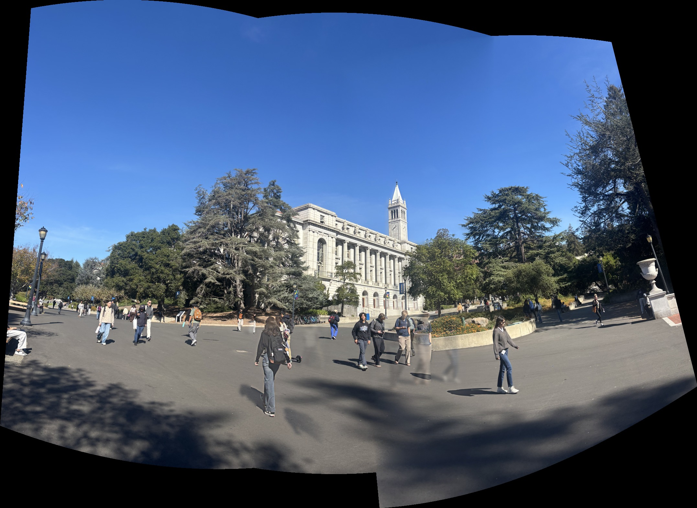
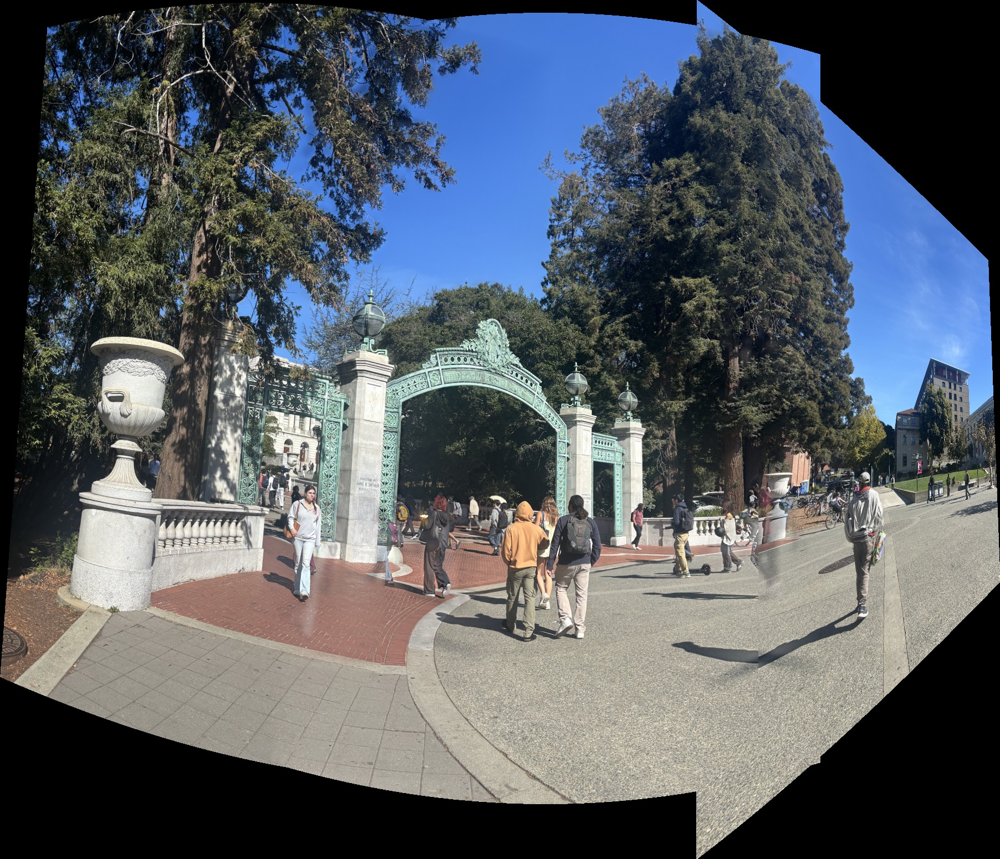
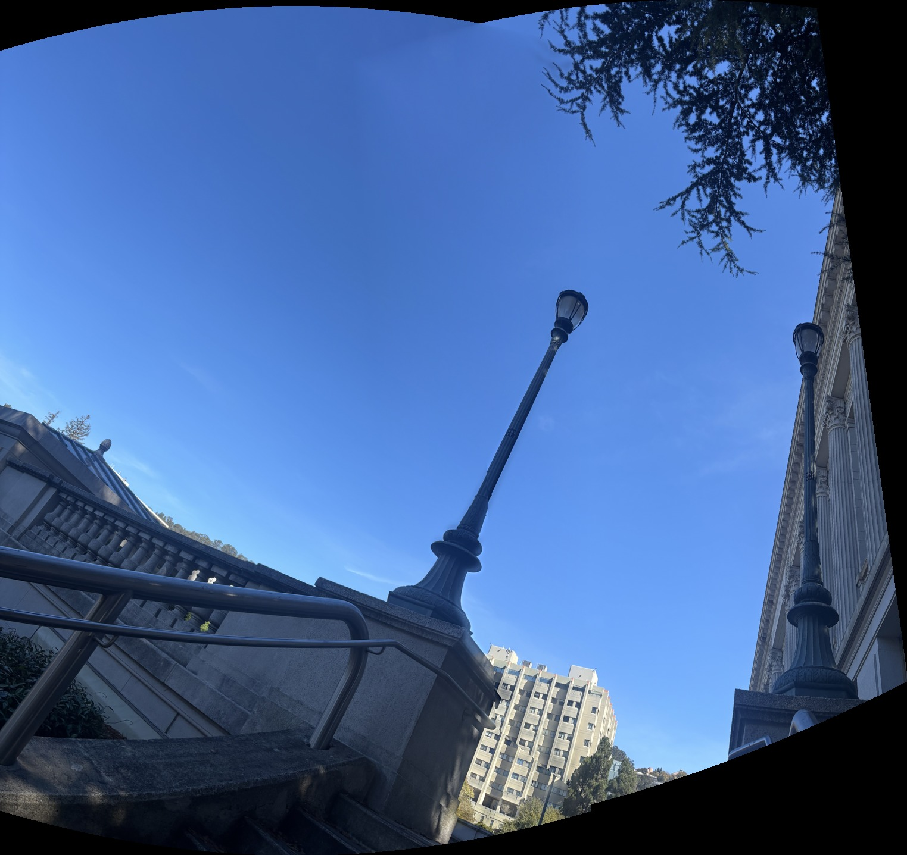
The Wheeler panorama gains the most. The plaza no longer fans out at the edges, and the lamp posts on the left and right keep a sensible size. The price is that straight horizontal lines bend into curves, which is easiest to see on the lamp set, where the camera was tilted.
Part B · Automatic stitching
Part A used points I picked by hand. Part B finds them automatically, following Brown, Szeliski and Winder, "Multi-Image Matching using Multi-Scale Oriented Patches", with the simplifications from the assignment: one scale, no sub-pixel accuracy, axis-aligned descriptors and no wavelet step. The pipeline for each pair of photos is:
- Find Harris corners in both photos.
- Keep an evenly spread subset with adaptive non-maximal suppression (ANMS).
- Describe each kept corner with a blurred, normalized 8×8 patch.
- Match patches between the photos, and keep a match only if it passes the nearest-neighbor ratio test.
- Run RANSAC on the matches to find a homography that most of them agree with.
- Warp and blend exactly as in Part A.
Everything below uses the same quarter-size photos as Part A, and the same photo pairs, so the two parts compare directly.
B.1 · Harris corners and ANMS
For corner detection I used the course's harris.py, which the assignment allows. It computes the Harris response at a single scale (σ = 1), keeps local maxima, and drops corners within 24 pixels of the border. On this photo of Wheeler Hall it finds 42,447 corners. Most of them are weak, and many sit on sky noise and leaves.
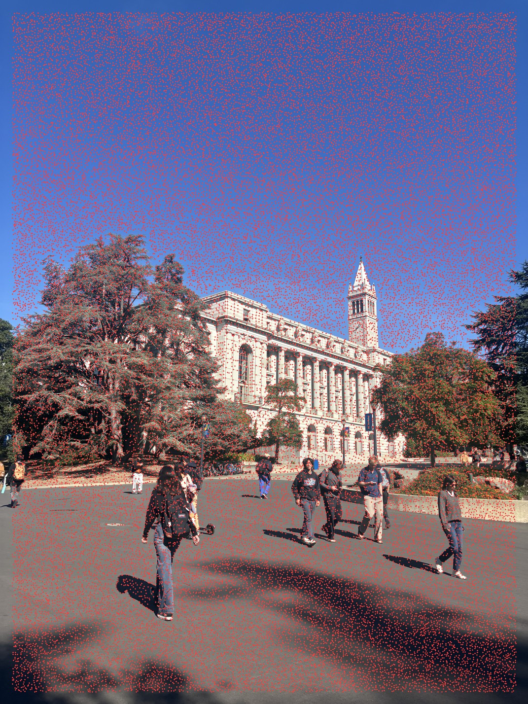
Matching needs corners that are spread over the whole photo. If you keep the 500 strongest, they pile up on the trees and the people. ANMS fixes this. For each corner it finds the radius to the nearest corner that is clearly stronger (the neighbor's response times 0.9 must beat the corner's own), and then it keeps the corners with the largest radii. A corner survives if it is either very strong or far from anything stronger.
def corners(im, edge=24):
h, coords = get_harris_corners(gray(im), edge_discard=edge)
ys, xs = coords
return np.c_[xs, ys].astype(float), h[ys, xs]
def anms(pts, strength, n=500, robust=0.9, chunk=2048, pool=8000):
order = np.argsort(-strength)[:pool]
pts, strength = pts[order], strength[order]
radius = np.full(len(pts), np.inf)
for start in range(1, len(pts), chunk):
stop = min(start + chunk, len(pts))
d = dist2(pts[start:stop], pts[:stop])
weaker = strength[start:stop, None] < robust * strength[None, :stop]
radius[start:stop] = np.where(weaker, d, np.inf).min(1)
keep = np.argsort(-radius)[:n]
return pts[keep], np.sqrt(radius[keep])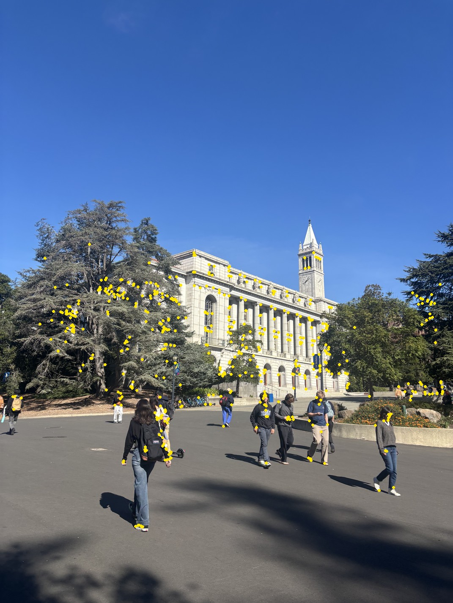
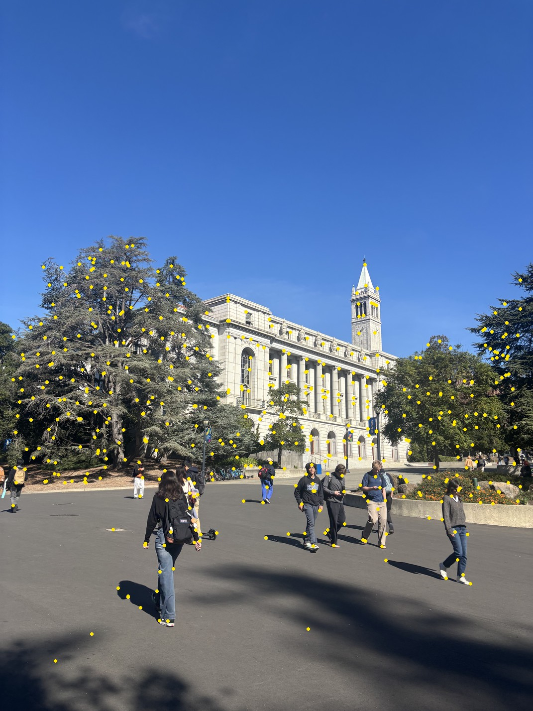
Two choices differ from the paper. First, I keep 3,000 corners per photo instead of 500. With 500 corners and a ratio of 0.6, I got only 13 to 42 matches per pair, and RANSAC was unstable: it recovered several homographies that were far off. With 3,000 corners I get 100 to 932 matches per pair. Second, ANMS compares every corner with every stronger corner, which gets slow with tens of thousands of corners. So I run it on the 8,000 strongest corners only. The weaker ones are mostly noise. After ANMS, I drop corners within 30 pixels of the border, because their 40×40 windows would run off the photo, leaving 2,956 on this photo.
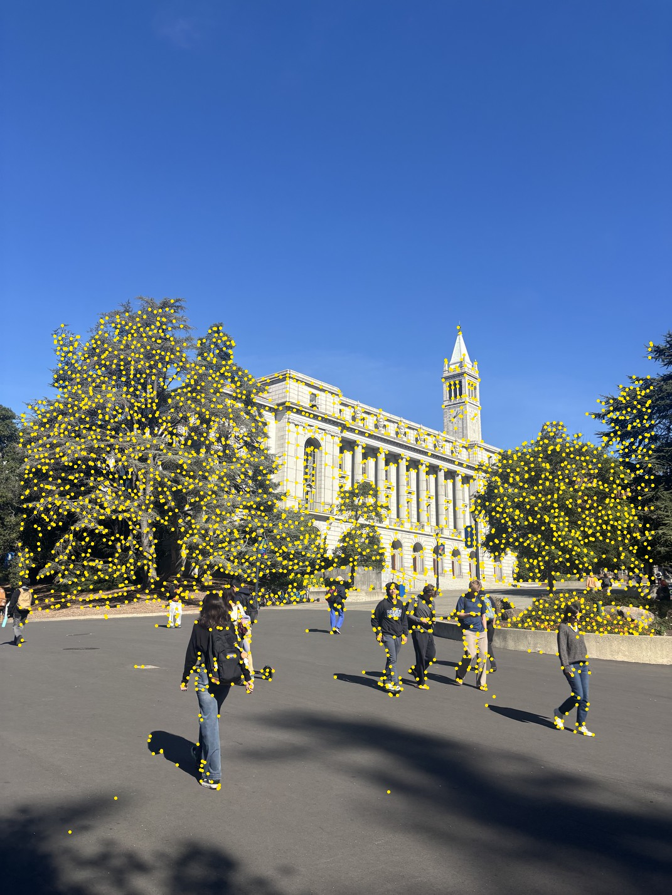
B.2 · Feature descriptors
Each descriptor starts with a 40×40 window around the corner. I blur the grayscale photo with a Gaussian (σ = 2.5), then sample an 8×8 grid from the window, 5 pixels apart. Sampling from the blurred, larger window makes the descriptor tolerant to small errors in where the corner sits. Last, I subtract the mean and divide by the standard deviation of the 64 values (bias/gain normalization), so a patch looks the same whether the photo is brighter or has more contrast.
def gray(im):
return im @ np.array([0.299, 0.587, 0.114])
def normalize(patches):
patches = patches - patches.mean(1, keepdims=True)
return patches / (patches.std(1, keepdims=True) + 1e-8)
def descriptors(im, pts, angles=None, window=40, size=8):
g = gaussian_filter(gray(im), window / size / 2)
step = window / size
offsets = (np.arange(size) - (size - 1) / 2) * step
ox, oy = np.meshgrid(offsets, offsets)
if angles is None:
angles = np.zeros(len(pts))
c, s = np.cos(angles)[:, None, None], np.sin(angles)[:, None, None]
sx = pts[:, 0, None, None] + c * ox - s * oy
sy = pts[:, 1, None, None] + s * ox + c * oy
patches = sample_bilinear(g[..., None], sx, sy)[..., 0]
return normalize(patches.reshape(len(pts), -1))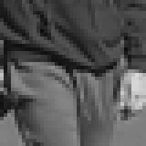
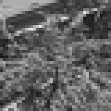
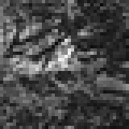
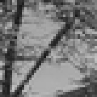
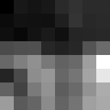
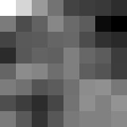
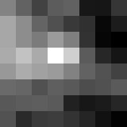
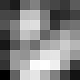
The top row shows each 40×40 window at the photo's own sharpness. The bottom row shows the normalized 8×8 descriptor made from it, stretched to full contrast. The descriptors keep the big light and dark shapes of the window and drop the fine detail.
B.3 · Feature matching
For each descriptor in the first photo, I find its nearest and second-nearest descriptors in the second photo, by Euclidean distance. A true match should be much closer than the runner-up. A wrong match usually isn't: it is about as close as many other patches. So I keep a match only if the nearest distance is less than a set fraction of the second-nearest distance. This is Lowe's ratio test.
def match(d1, d2, ratio=0.6):
d = np.sqrt(np.maximum(dist2(d1, d2), 0))
nearest = np.argsort(d, 1)[:, :2]
first = d[np.arange(len(d1)), nearest[:, 0]]
second = d[np.arange(len(d1)), nearest[:, 1]]
good = first < ratio * second
return np.c_[np.nonzero(good)[0], nearest[good, 0]], first / secondTo choose the threshold I did what Figure 6b of the paper does. For one pair (Wheeler, left and middle photos) I computed the ratio for every corner's best match. I called a match correct if it landed within 8 pixels of where my hand-picked homography from Part A predicts, and wrong if it was more than 30 pixels away. The plot shows both groups.
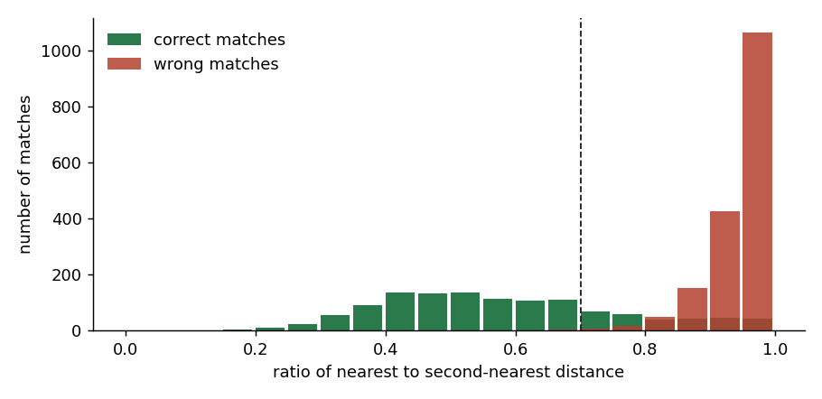
Below 0.65 there is a single wrong match. From 0.65 to 0.7 a few appear (3 against 111 correct), and above 0.8 they outnumber the correct ones. I chose 0.7. It keeps about 70% of the correct matches and under 1% of the wrong ones, and RANSAC removes the few wrong ones that get through. The matches that pass for each pair are drawn below, before any outlier removal.
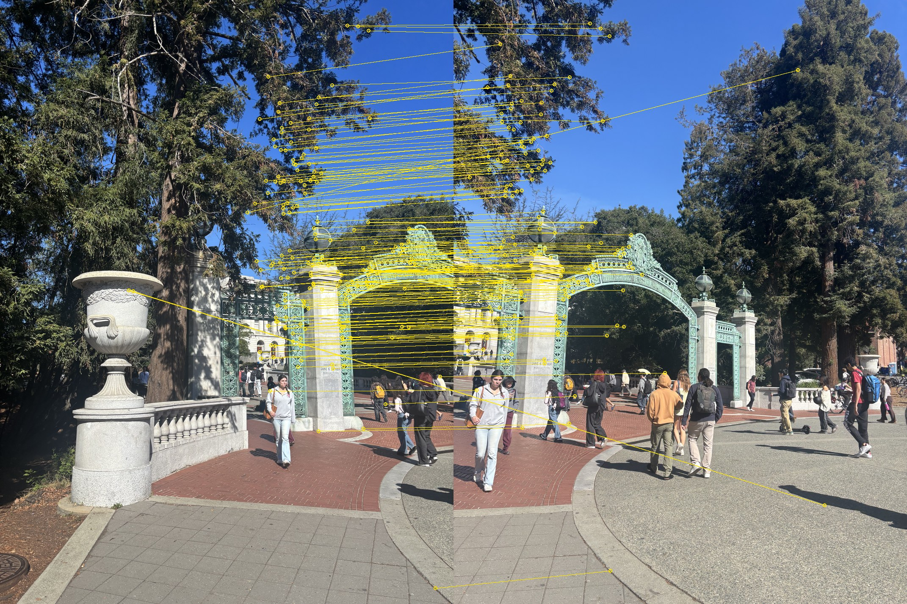
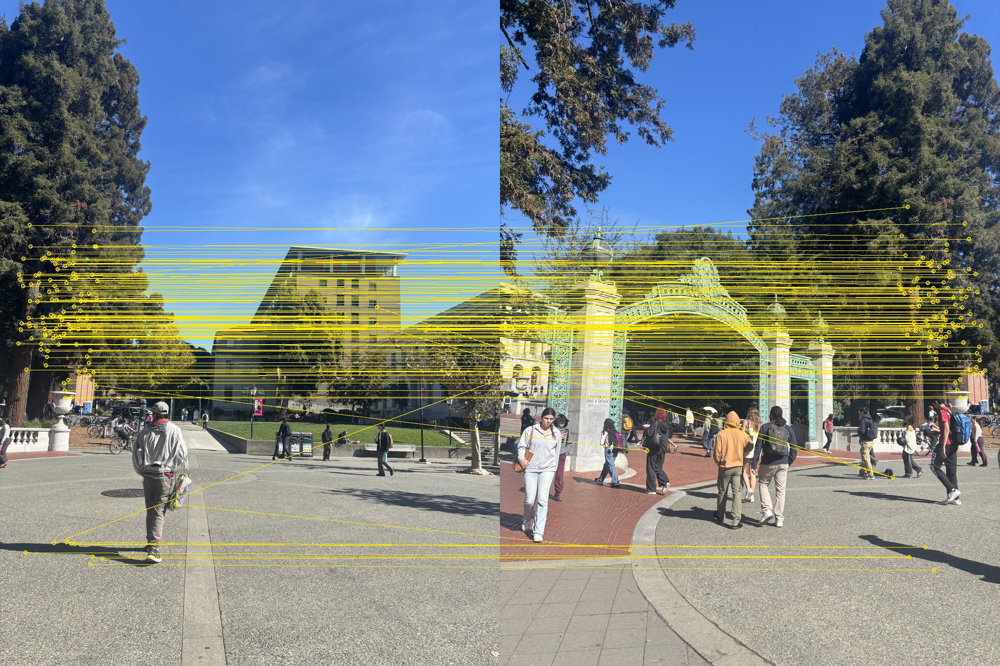
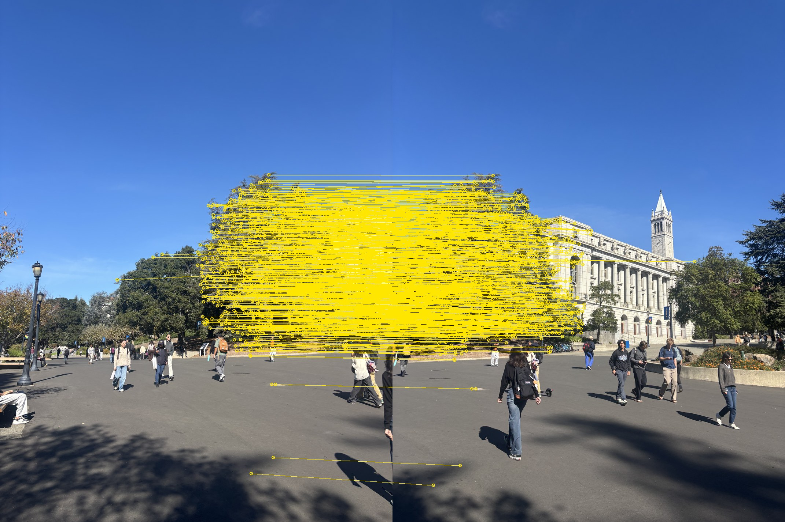
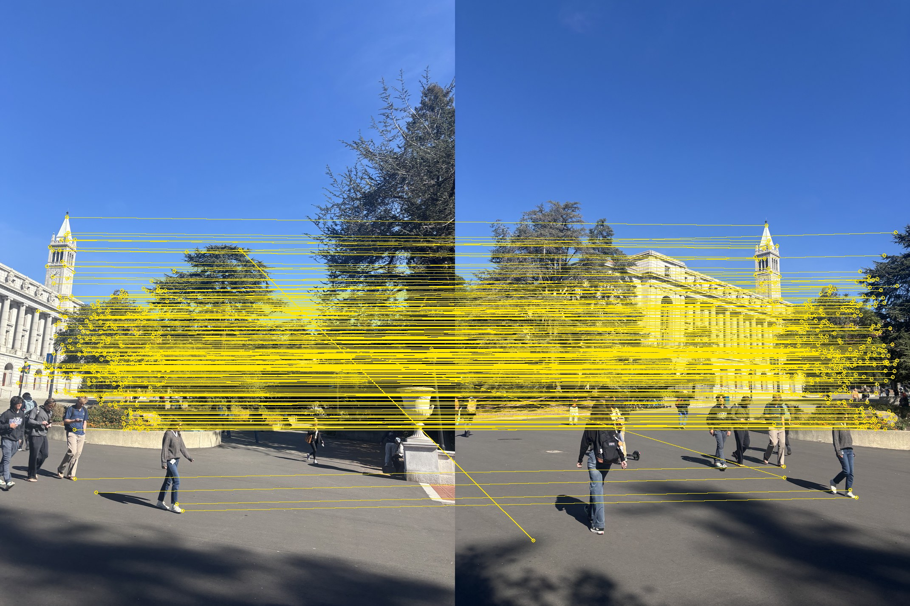
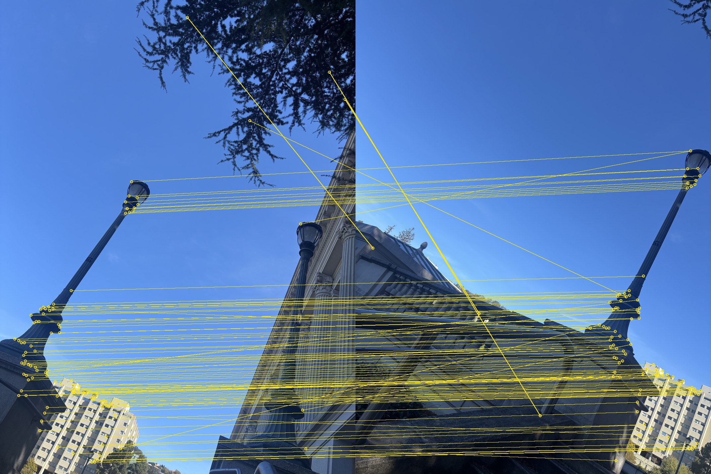
B.4 · RANSAC and automatic mosaics
Some matches are still wrong, and a least-squares fit pulls toward them. RANSAC avoids this. It repeats 3,000 times: pick 4 matches at random, compute the exact homography from them, and count how many of all the matches that homography maps to within 2 pixels of their partners (the inliers). The homography with the most inliers wins, and I refit it by least squares on all of its inliers, using the same computeH as Part A.
def ransac(p1, p2, iters=3000, eps=2.0, seed=0):
rng = np.random.default_rng(seed)
best = np.zeros(len(p1), bool)
for _ in range(iters):
pick = rng.choice(len(p1), 4, replace=False)
try:
H = computeH(p1[pick], p2[pick])
except np.linalg.LinAlgError:
continue
inliers = np.linalg.norm(apply_h(H, p1) - p2, axis=1) < eps
if inliers.sum() > best.sum():
best = inliers
return computeH(p1[best], p2[best]), bestIn the figures, green lines are inliers and red lines are outliers that RANSAC threw away.
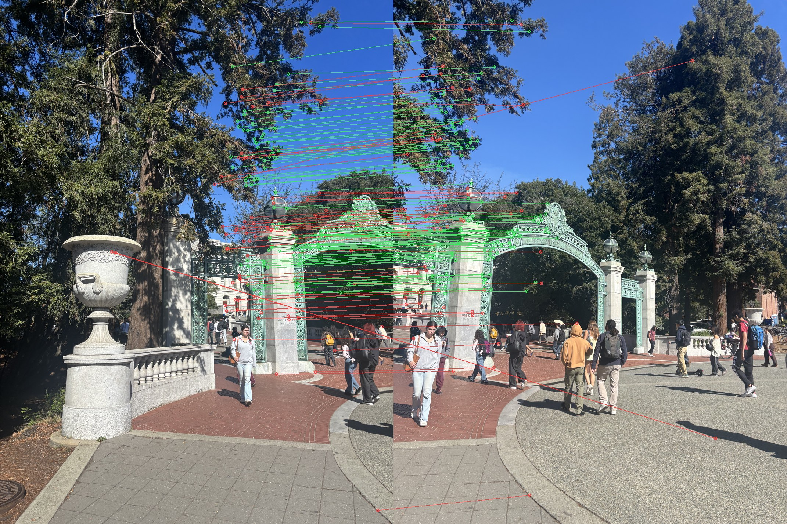
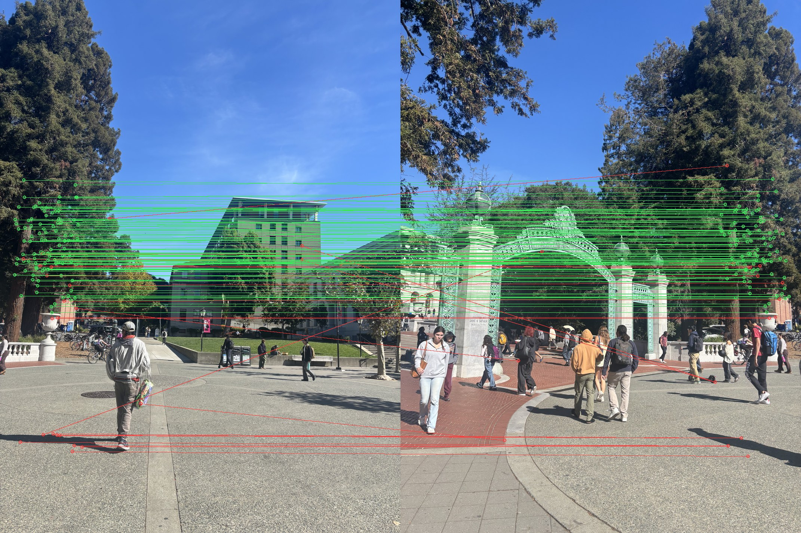
| Mosaic | Pair | Matches | Inliers |
|---|---|---|---|
| gate | IMG_4048 → IMG_4049 | 176 | 113 |
| gate | IMG_4050 → IMG_4049 | 118 | 95 |
| wheeler | IMG_4051 → IMG_4052 | 932 | 867 |
| wheeler | IMG_4053 → IMG_4052 | 295 | 188 |
| lamps | IMG_4058 → IMG_4057 | 100 | 46 |
Manual against automatic
Each row shows the Part A mosaic on the left and the automatic mosaic on the right. Both use the same photos, the same reference photo, and the same two-band blend.
The two mosaics agree well on Wheeler Hall, where the automatic and hand-picked homographies for the left photo differ by only 0.7 pixels on average. They disagree on the other pairs, so I wanted a measurement and not just my eyes. For each pair I warped the photo into the reference with each homography, blurred both, and compared them over the area they share. Lower difference and higher correlation both mean a better alignment.
| Mosaic | Pair | Difference, manual | Difference, auto | Correlation, manual | Correlation, auto | H differs by |
|---|---|---|---|---|---|---|
| gate | IMG_4048 → IMG_4049 | 0.0955 | 0.0753 | 0.802 | 0.862 | 6.8 px |
| gate | IMG_4050 → IMG_4049 | 0.1146 | 0.0538 | 0.747 | 0.873 | 31.5 px |
| wheeler | IMG_4051 → IMG_4052 | 0.0415 | 0.0383 | 0.81 | 0.822 | 0.7 px |
| wheeler | IMG_4053 → IMG_4052 | 0.1197 | 0.0918 | 0.684 | 0.868 | 9.6 px |
| lamps | IMG_4058 → IMG_4057 | 0.0962 | 0.0911 | 0.78 | 0.774 | 18.6 px |
The automatic homography is as good or better on every pair (the lamp pair is a tie) and clearly better on three of them. The biggest gap is the right photo of the gate. I had only 9 hand-picked points there, from a narrow overlap that is mostly dark trees. The automatic fit uses 95 inliers, and it lines up the overlap much better (difference 0.054 against 0.115). The "H differs by" column is the mean distance, at my hand-picked points, between where the two homographies send them.
Some of the remaining error is not a bug. I held the phone by hand, so the camera moved a little between shots. Nearby objects (the urns, the railing) shift more than far-away ones (the trees, the Campanile), and no single homography fits both. You can still see faint ghosts of people who walked between shots, in both versions. The overlap score includes those people too.
B.5 · Bells and whistles: rotation invariance
I chose rotation invariance. The axis-aligned descriptor above fails if one photo is turned relative to the other, because the patch it samples is turned too. The fix is to give each corner a direction and sample the 40×40 window along it. I find the direction from the image gradient. I smooth the Sobel gradients with a Gaussian (σ = 4.5) and take the angle of the smoothed gradient at the corner. Then the 8×8 sample grid is rotated by that angle, so a turned photo yields the same patch.
def orientations(im, pts, sigma=4.5):
g = gaussian_filter(gray(im), 1)
gx = gaussian_filter(sobel(g, axis=1), sigma)
gy = gaussian_filter(sobel(g, axis=0), sigma)
xi, yi = np.round(pts).astype(int).T
return np.arctan2(gy[yi, xi], gx[yi, xi])
def descriptors(im, pts, angles=None, window=40, size=8):
g = gaussian_filter(gray(im), window / size / 2)
step = window / size
offsets = (np.arange(size) - (size - 1) / 2) * step
ox, oy = np.meshgrid(offsets, offsets)
if angles is None:
angles = np.zeros(len(pts))
c, s = np.cos(angles)[:, None, None], np.sin(angles)[:, None, None]
sx = pts[:, 0, None, None] + c * ox - s * oy
sy = pts[:, 1, None, None] + s * ox + c * oy
patches = sample_bilinear(g[..., None], sx, sy)[..., 0]
return normalize(patches.reshape(len(pts), -1))To test it, I rotated the middle Wheeler photo by 45 degrees and matched it against the left Wheeler photo. I filled the empty corners of the rotated image with faint noise, and I dropped any corner near the fake border. The first figure shows the direction I found at some of the corners, drawn as cyan lines.
Without the direction, almost nothing matches: 4 matches pass the ratio test and only 2 agree with a homography. With it, 735 matches pass and 678 are inliers. The mosaics above use the plain axis-aligned descriptors, because my photos aren't rotated against each other, and the oriented version only matters when they are.